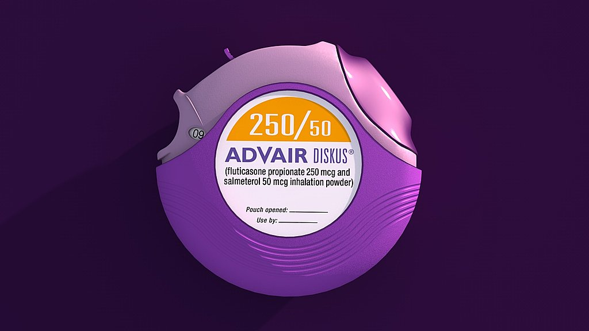
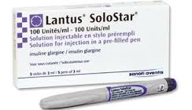
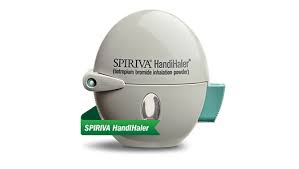

Synthroid
Common side effects of Synthroid include fever, hot flashes, sensitivity to
heat, sweating, headache, nervousness, irritability, nausea, sleep problems
(insomnia), changes in appetite or changes in weight, and transient hair
loss. Some women experience menstrual changes. (rxlist.com)
For More Information
Crestor
Unexplained muscle pain, tenderness, or weakness;
confusion, memory problems;
fever, unusual tiredness, and dark colored urine;
swelling, weight gain, urinating less than usual or not at all;
increased thirst, increased urination, hunger, dry mouth, fruity breath odor,
drowsiness, dry skin, blurred vision, weight loss; or
nausea, upper stomach pain, itching,
loss of appetite, dark urine, clay-colored stools, jaundice (yellowing of the skin or eyes).
Less serious side effects may include:
headache, depressed mood;
mild muscle pain;
joint pain;
sleep problems (insomnia), nightmares;
constipation;
mild nausea; or
stomach pain or indigestion.
This is not a complete list of side
effects and others may occur. Call your doctor for medical advice about side effects. (emedicinehealth.com)
For More Information
Ventolin HFA
Ventolin HFA (albuterol sulfate inhalation aerosol) is a
bronchodilator used to treat or prevent bronchospasm in people with reversible obstructive airway disease.
Ventolin HFA is also used to prevent exercise-induced bronchospasm.
Common side effects of Ventolin HFA include nervousness,
shaking (tremor),
palpitations,
headache,
mouth/throat dryness or irritation,
cough, runny or stuffy nose,
nausea,
vomiting,
dizziness,
sleep problems (insomnia),
muscle pain, or diarrhea.
Seek medical help immediately if you have rare but serious side effects of
Ventolin HFA, including chest pain or irregular heartbeat.
Click Here For More Information
Nexium
Nexium is used to treat certain stomach and esophagus
problems (such as acid reflux, ulcers). It works by decreasing the amount of acid your stomach makes. It relieves symptoms such as
heartburn, difficulty swallowing,
and persistent cough. This medication helps heal acid
damage to the stomach and esophagus, helps prevent ulcers,
and may help prevent cancer of the esophagus. Nexium belongs to a class
of drugs known as proton pump inhibitors (PPIs).Headache or abdominal pain may occur. If any of these effects
persist or worsen, tell your doctor or pharmacist promptly. Click Here For More Information
Advair Diskus
This product is used to control and prevent symptoms (wheezing and shortness of breath) caused by asthma
or ongoing lung disease (chronic obstructive pulmonary disease-COPD,
which includes chronic bronchitis and emphysema).
It contains 2 medications: fluticasone and salmeterol.
Fluticasone belongs to a class of drugs
known as corticosteroids. It works by reducing the
irritation and swelling of the airways. Salmeterol belongs to the class
of drugs known as long-acting beta agonists. It works by opening airways in the lungs to make breathing easier. Hoarseness, throat irritation, headache,
or stomach upset may occur. If any of these effects
persist or worsen, tell your doctor promptly. Click Here For More Information

Lantus Solostar
Insulin glargine is used with
a proper diet and exercise program to control
high blood sugar in people with diabetes. Controlling high blood
sugar helps prevent
kidney damage, blindness, nerve
problems, loss of limbs,
and sexual function problems. Proper control of diabetes may
also lessen your risk
of a heart attack or stroke. Injection site reactions
(such as pain, redness, irritation) may occur. If any of these effects persist
or worsen, tell your doctor or pharmacist promptly. Click Here For More Information

Vyvanse
Lisdexamfetamine is used to treat attention deficit hyperactivity
disorder (ADHD) as part of a total treatment plan,
including psychological, social, and other treatments.
It may help to increase the ability to pay attention,
stay focused, and stop fidgeting. Lisdexamfetamine may also
be used to treat binge eating disorder (BED).
It may help to reduce the number of binge eating days.
Nausea, vomiting, constipation, stomach/abdominal pain,
loss of appetite, dry mouth, headache, nervousness, dizziness,
trouble sleeping,
sweating, weight loss,
irritability, and restlessness may occur
. If any of these effects
persist or worsen, tell your doctor or
pharmacist promptly. Click Here For More Information 
Lyrica
This medication is used to treat pain caused by
nerve damage due to diabetes or to shingles (herpes zoster) infection. It may also be used to treat nerve pain caused
by spinal cord injury. This medication is also used
to treat pain in people with fibromyalgia.
It is also used with other medications to
treat certain types of seizures
(partial onset seizures). Drowsiness,
dizziness,
dry mouth,
constipation,
difficulty concentrating,
swollen arms/legs,
and weight gain may occur. If any of these
effects persist or worsen, tell your doctor or pharmacist promptly.Click Here For More Information
Spiriva Handihaler
Spiriva Handihaler is used to control and prevent symptoms
(such as wheezing, shortness of breath) caused by ongoing lung disease (chronic obstructive pulmonary
disease-COPD which includes bronchitis and emphysema). It works by
relaxing the muscles around the airways so that they
open up and you can breathe more easily. Spiriva Handihaler belongs to a class of drugs
known as anticholinergics. Controlling symptoms of breathing problems
can decrease time lost from work or school.
Dry mouth, constipation, or dizziness may occur. If any of these effects persist or worsen, tell your doctor or pharmacist promptly.
Remember that your doctor has prescribed
this medication because he or she has
judged that the benefit to you is
greater than the risk of side effects. Many people using this medication do not have serious side effects. Click Here For More Information
